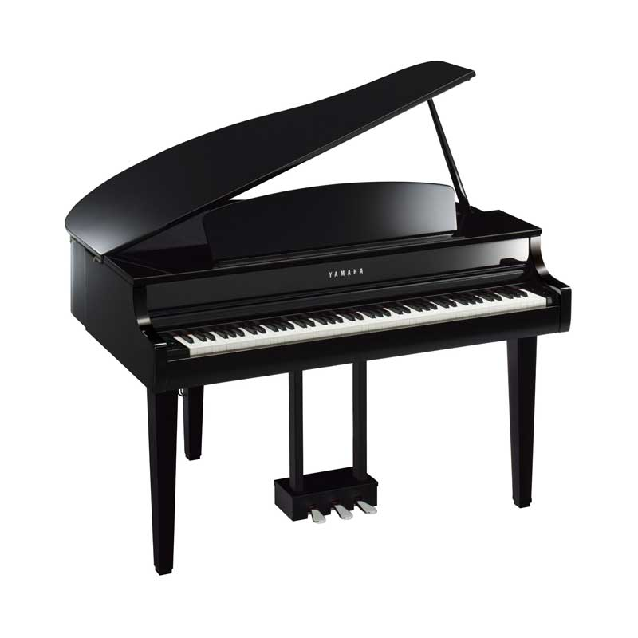
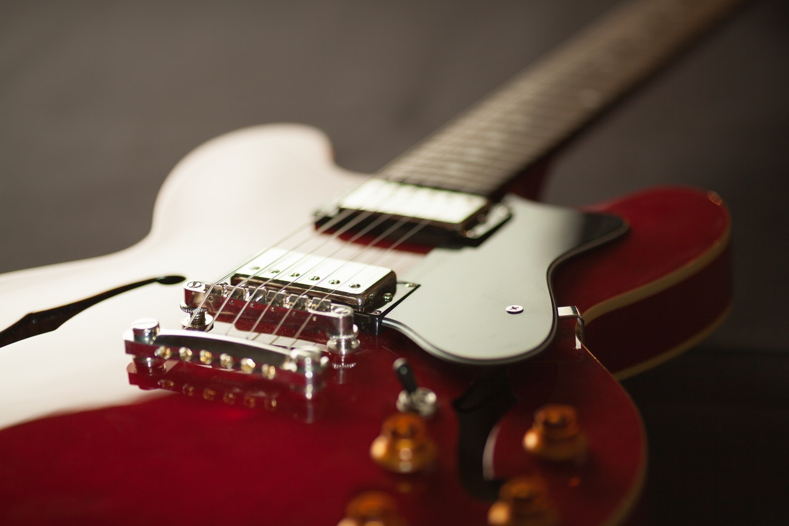
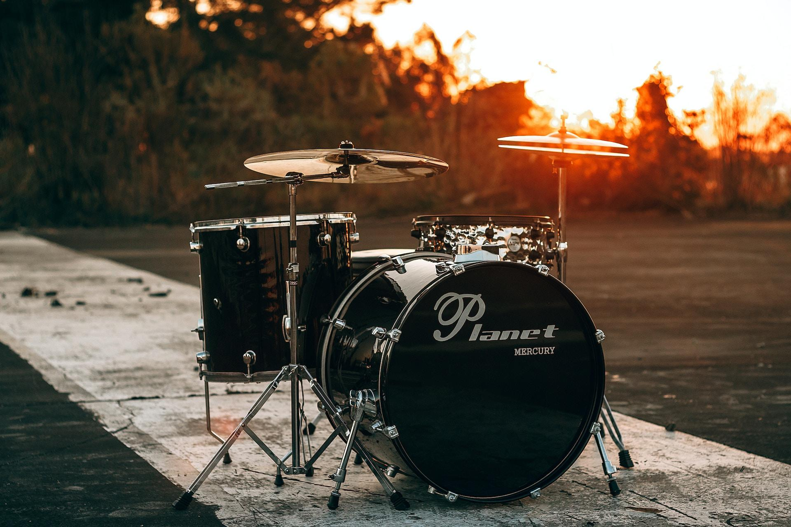
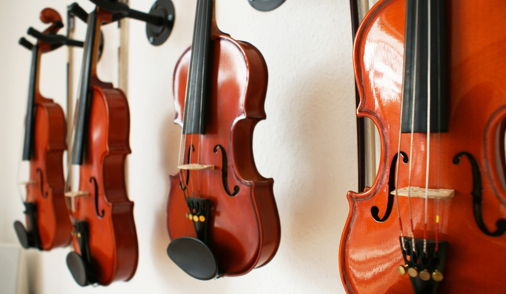
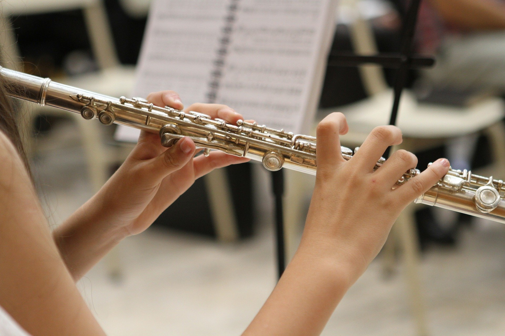

Instrumentos Musicales
Descubre el fascinante mundo de los instrumentos que dan vida a la música

Piano
Instrumento de teclado
El piano es un instrumento musical armónico clasificado como instrumento de teclado y de cuerdas percutidas por el sistema de clasificación tradicional. El músico que toca el piano recibe el nombre de pianista.

Guitarra
Instrumento de cuerda
La guitarra es un instrumento musical de cuerda pulsada, compuesto de una caja de resonancia, un mástil sobre el que va adosado el diapasón y seis cuerdas. Sobre el diapasón van incrustados los trastes.

Batería
Instrumento de percusión
La batería es un conjunto de instrumentos de percusión, que consta de tambores, bombos, platillos y otros accesorios. Es ampliamente utilizada en muchos géneros musicales y es la base rítmica de bandas de rock, pop, jazz y otros estilos.

Violín
Instrumento de cuerda frotada
El violín es un instrumento de cuerda frotada que tiene cuatro cuerdas afinadas por intervalos de quintas: sol, re, la y mi. Es el más pequeño y agudo de la familia de los instrumentos de cuerda clásicos.
Saxofón
Instrumento de viento-madera
El saxofón es un instrumento musical de viento-madera, generalmente fabricado de latón, que consta de una boquilla con una caña simple. Fue inventado por Adolphe Sax en la década de 1840.
Trompeta
Instrumento de viento-metal
La trompeta es un instrumento musical de viento-metal que consta de un tubo largo y doblado, terminado en una campana acústica. Es uno de los instrumentos más antiguos y se utiliza en diversos géneros musicales.

Flauta Traversa
Instrumento de viento-madera
La flauta traversa es un instrumento musical de viento-madera. Es uno de los instrumentos más antiguos y se utiliza tanto en orquestas clásicas como en diversos géneros musicales contemporáneos.
Arpa
Instrumento de cuerda pulsada
El arpa es un instrumento de cuerda pulsada formado por un marco resonante y una serie de cuerdas tensadas entre la sección inferior y la superior. Las cuerdas pueden ser pulsadas con los dedos.